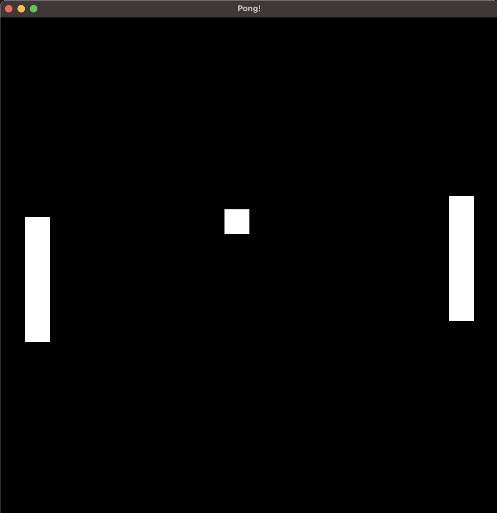

Pong
Pong is sometimes considered as the "Hello World" of games. A simple game which can let's us explore how things work. With FRUG this won't be the exception and we'll develop a simple version of Pong to explore how to use FRUG beyond simple feature examples.
The first thing we'll need is our main.rs with our frug instance initialization, our empty update function, and the run call. You should have something like this:
use frug; use cgmath::Vector2; fn main() { let (frug_instance, event_loop) = frug::new("Pong!"); let update_function = move |instance: &mut frug::FrugInstance, input: &frug::InputHelper| { // Rendering instance.clear(); instance.update_buffers(); }; frug_instance.run(event_loop, update_function); }
Oh, and don't forget to add FRUG to your Cargo.toml! (we'll also need another crate called cgmath so you might add it as well).
# ...
[dependencies]
cgmath = "0.18"
frug = "*"
Now, let's quickly go over what things we'll need, shall we?
- Our "player" (just a rectangle to represent the player's paddle/racket).
- The oponent (almost the same as the player).
- The ball
We could technically need more things, but for the sake of simplicity we'll only use those three things. Now, again for simplicity we'll just use rectangles for all 3 objects, yet the ball will obviously be smaller (a small square). This "ball" will start at the center of the screen and move to a random side of the screen to start the game. The "opponent" will just move to try to align the vertical center of the paddle with the center of the ball. And finally, we'll just let the player control their paddle through the keyboard's arrows.
Let's start by creating the ball and the opponent, as it allows us to start developing the simple aspects of our game right away.
We can start by creating a struct called "CollisionRectangle" which will help us to manage our 3 objects:
#![allow(unused)] fn main() { struct CollisionRectangle { pos: Vector2<f32>, width: f32, height: f32, vel: Vector2<f32>, } }
You might notice that we're using
Vector2<i32>for our position and velocity. This might look familiar if you've used Unity or other engines, but in case you don't know them just keep in mind that they will simply hold 2 components (x and y) for us to represent those attributes.
And we could also use a method to initialize new instances of our struct:
#![allow(unused)] fn main() { impl CollisionRectangle { fn new(x: f32, y: f32, width: f32, height: f32) -> CollisionRectangle { CollisionRectangle { pos: Vector2 { x, y }, width, height, vel: Vector2 { x: 0.0, y: 0.0 }, } } } }
Now that we have our struct, we can define our ball! (do this inside your main function but before your update function)
#![allow(unused)] fn main() { // ... // our objects let mut ball: CollisionRectangle = CollisionRectangle::new(-0.05, -0.05, 0.1, 0.1); }
Now all we need to do is render our ball! For this we will simply draw a rectangle using our FRUG instance, just like we did in the tutorial (this goes in our update function after the clear() function call).
#![allow(unused)] fn main() { instance.add_colored_rect( ball.pos.x, ball.pos.y, ball.width, ball.height, [1.0, 1.0, 1.0], ); }
If you run this now you'll notice that it will just show our screen and a weird rectangle. This happens because the coordinates of the "world" are from -1 to 1 on every direction, so if your window is not a square it is logical that the ball won't look like a square. We can easy-fix this by just making our window have the same height as it's width.
#![allow(unused)] fn main() { // This goes before our update function. frug_instance.set_window_size(800.0, 800.0); }
You might be thinking that this will be a severe issue when we want to work with a window that is not square-sized. Yes, you're right. This is always an issue and every engine and framework allows multiple types to solve this. In such cases it's better just to understand how the framework/engine/library works and use the solution that works best for you.
Now that we have a "ball" in our game, we need some way to make it start moving. For this we will just check if the player pressed the return key and if the ball isn't moving. If that's the case we will set the speed of the ball and a random direction (left or right).
We'll do this inside our update function:
#![allow(unused)] fn main() { let paddle_speed = 0.006; // start moving the ball if it's not moving if input.key_pressed(frug::VirtualKeyCode::Return) { if ball.vel.x == 0.0 { let dir = if rng.gen_bool(0.5) { -1.0 } else { 1.0 }; ball.vel.x = 0.01 * dir; } } }
And now we need to actually move the ball each frame. As this is something that we'll need to do for every object in our game lets add it in the implementation of our Collision Rectangle.
#![allow(unused)] fn main() { fn update_pos(&mut self) { self.pos += self.vel; } }
And we'll call that method inside our update function:
#![allow(unused)] fn main() { // updates ball.update_pos(); }
If you run this and hit the return key you'll notice that the ball starts moving!
Now we'll need something our ball can actually bounce with, so why don't we start working with the player's paddle?
For this, just as we did with the ball, we'll need to create another instance of our CollisionRectangle. You can add this next to the init of our ball.
#![allow(unused)] fn main() { let mut player = CollisionRectangle::new(-0.9, 0.2, 0.1, 0.5); }
And draw a rectangle each frame in the same way we did with our ball.
#![allow(unused)] fn main() { instance.add_colored_rect( player.pos.x, player.pos.y, player.width, player.height, [1.0, 1.0, 1.0], ); }
And we can add a call to it's update_pos.
#![allow(unused)] fn main() { // updates ball.update_pos(); player.update_pos(); // <- NEW! }
Now, the movement for our "player" will be based on input, so let's just add a variable called paddle_speed, which we will use both with our player and the opponent. We'll keep things simple and add that to the player's vertical velocity if they upwards key is being pressed, and substract it with the downwards key (oh, and set the player's Y velocity to 0 each frame). This way if the player is pressing both keys at the same time the paddle will stop.
#![allow(unused)] fn main() { let paddle_speed = 0.006; // move player player.vel.y = 0.0; if input.key_held(frug::VirtualKeyCode::Up) { player.vel.y += paddle_speed; } if input.key_held(frug::VirtualKeyCode::Down) { player.vel.y -= paddle_speed; } }
If you try this out you should see that the paddle can move when you press the keys! However, you'll also notice that the ball can absolutely ignore our paddle and go through it and into the infinity. Let's fix that.
We can start with the simple things and reset the ball if it goes outside the screen. For this we will need a function to check if the ball has gone outside the screen. This is not a good practice but for the sake of simplicity let's just add it in our CollisionRectangle implementation (or feel free to do it in a better way!).
#![allow(unused)] fn main() { fn is_game_over(&mut self) -> bool { if self.pos.x - self.width * 2.0 >= 1.0 || self.pos.x + self.width * 2.0 < -1.0 { return true; } return false; } }
And we'll check for this at some point in our update function.
#![allow(unused)] fn main() { // check if it's game over if ball.is_game_over() { // restart ball ball.pos.x = -0.05; ball.pos.y = -0.05; ball.vel.x = 0.0; ball.vel.y = 0.0; } }
With that done we need to make the ball bounce with our paddle and with the vertical limits of the screen. This time we'll go through the more elaborate part of it, colliding with the paddle. I won't go into much detail with this function, just know that we'll do it in the implementation of the CollisionRectangle and we'll do it in some way to receive another object as parameter and bounce against it in the x axis and set a new vertical direction randomly.
#![allow(unused)] fn main() { /// This function will only work for the ball! fn check_collision(&mut self, obj: &CollisionRectangle) { let mut rng = rand::thread_rng(); let tolerance_w = 0.15 * self.width; // percentage of shape let tolerance_h = 0.15 * self.height; // percentage of shape // Horizontal collision if self.pos.y - tolerance_h > obj.pos.y - obj.height { if self.pos.y - tolerance_h < obj.pos.y { // give priority for horizontal collision if self.pos.x < obj.pos.x + obj.width { if self.pos.x > obj.pos.x { // Left collision is happening self.vel.x *= -1.0; self.vel.y = rng.gen_range(-0.01..0.01); return; } } if self.pos.x + self.width > obj.pos.x { if self.pos.x + self.width < obj.pos.x + obj.width { // Right collision is happening self.vel.x *= -1.0; self.vel.y = rng.gen_range(-0.01..0.01); return; } } } } // Vertical collision if self.pos.x + tolerance_w < obj.pos.x - obj.width { if self.pos.x + tolerance_w > obj.pos.x { // give priority for vertical collision if self.pos.y > obj.pos.y - obj.height { if self.pos.y < obj.pos.y { // Up collision is happening self.vel.y *= -1.0; return; } } if self.pos.y - self.height < obj.pos.y { if self.pos.y - self.height > obj.pos.y - obj.height { // Down collision is happening self.vel.y *= -1.0; return; } } } } // No collision was detected } }
And for the ball to bounce with the floor and ceiling we'll do something similar to what we did to reset the ball.
#![allow(unused)] fn main() { fn check_collision_screen(&mut self) { if self.pos.y >= 1.0 { if self.vel.y > 0.0 { self.vel.y *= -1.0; } } else if self.pos.y - self.height < -1.0 { if self.vel.y < 0.0 { self.vel.y *= -1.0; } } } }
Now we need to add those calls inside our update function.
#![allow(unused)] fn main() { // bounce ball in case of collision ball.check_collision(&player); ball.check_collision_screen(); }
And with that done we should have a ball that neatly bounces with our player's paddle!
You might notice that there's a very rare situation where the ball gets trapped between the floor/ceiling and the paddle. For the sake of simplicity of this example I'm not fixing that issue but feel free to try your own solution!
Now all we have left to do is to create our opponent. Fortunately, it is really easy now that we've done the hard parts. We can start by adding a new instance of the CollisionRectangle for our opponent.
#![allow(unused)] fn main() { let mut opponent = CollisionRectangle::new(0.8, 0.2, 0.1, 0.5); }
Add it's checks for collisions with our ball.
#![allow(unused)] fn main() { ball.check_collision(&opponent); }
Then the call to update_pos.
#![allow(unused)] fn main() { opponent.update_pos(); }
And our drawing of the opponent's rectangle.
#![allow(unused)] fn main() { instance.add_colored_rect( opponent.pos.x, opponent.pos.y, opponent.width, opponent.height, [1.0, 1.0, 1.0], ); }
Finally, we need some sort of AI to move our paddle. In this case we'll keep things simple and just try to align the center of the opponent with the center of the ball.
#![allow(unused)] fn main() { // move opponent let opponent_y = opponent.pos.y - (opponent.height / 2.0); let ball_y = ball.pos.y - (ball.height / 2.0); if opponent_y > ball_y { opponent.vel.y = -paddle_speed; } else if opponent_y < ball_y { opponent.vel.y = paddle_speed; } }
And... done! If you've gone through these steps you should be able to play pong!

Now that we've gone through a simple game, why don't we try something that involves sprites and a bit more color?